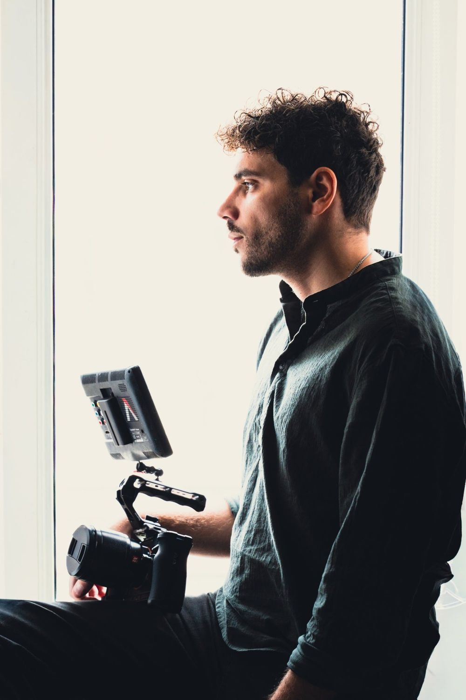

Contact Devis | Strasbourg, Alsace Demande de devis photographe et vidéaste à Strasbourg et en Alsace
Contact : devis photo et vidéo à Strasbourg et en Alsace
- Téléphone
- 07 51 24 60 39
- @rayane.alshouli
- Zone
- Strasbourg, Alsace, France
Bas-Rhin & Haut-Rhin - Rendez-vous
- Rendez-vous en ligne disponibles
- Langues
- Français · English spoken

Questions fréquentes : photographe et vidéaste à Strasbourg et en Alsace
Dans quelles zones vous déplacez-vous ?
Je me déplace dans toute l’Alsace (Bas-Rhin et Haut-Rhin), sans frais de déplacement. Je peux aussi intervenir en dehors de l’Alsace : des frais de déplacement sont alors ajoutés au devis.
Comment fonctionnent vos tarifs ?
Chaque projet est différent (durée, lieu, nombre de personnes, livrables). Je travaille donc essentiellement sur devis, adapté à votre projet. Décrivez-moi votre idée avec le formulaire et je vous réponds rapidement.
Quels sont vos délais de livraison ?
Pour les photos, comptez en moyenne 2 à 5 jours ouvrés selon le projet, et environ deux semaines pour un mariage. Pour les films, comptez en moyenne une semaine, et environ un mois pour un film de mariage.
Comment réserver, et faut-il un acompte ?
Après la signature du devis, un acompte de 30 % est demandé pour confirmer la réservation.
Combien de temps à l’avance dois-je vous contacter ?
Il n’y a pas de délai minimum : écrivez-moi dès que votre projet est en tête, je vous réponds rapidement.
Que recevrai-je exactement ?
Vous recevez des fichiers haute définition retouchés, avec les droits d’utilisation. La livraison se fait sous forme de fichiers, sans galerie en ligne, pour les photos comme pour les vidéos.
Travaillez-vous seul ?
Je travaille seul en photo comme en vidéo. Selon votre projet et votre budget, je peux faire appel à une équipe pour m’épauler.
Peut-on prévoir photo et vidéo le même jour ?
Oui, c’est possible. Le tarif est alors plus élevé que pour une seule prestation, et nous l’établissons ensemble dans le devis.